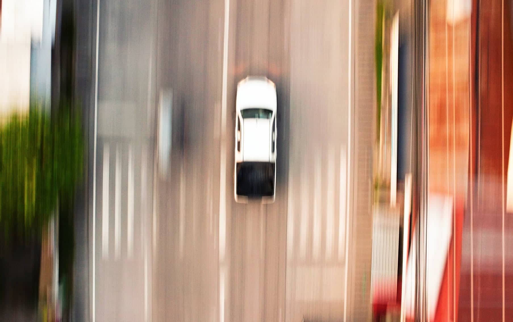
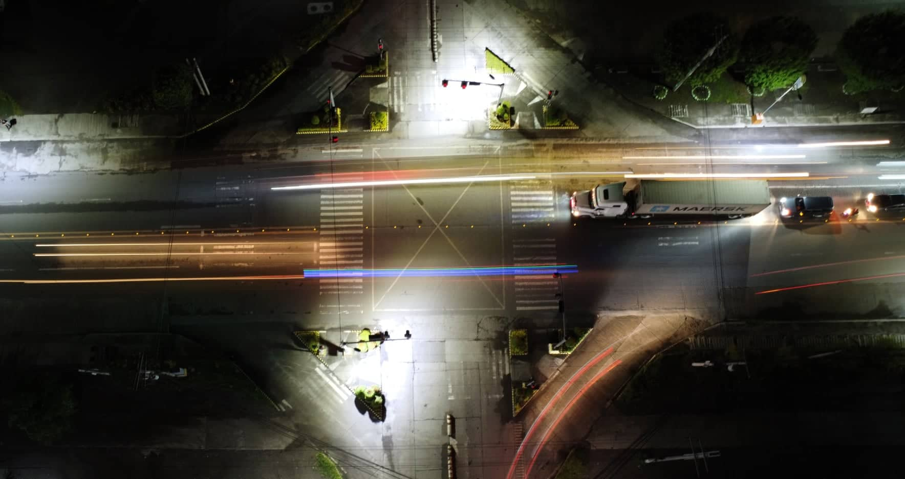

In the fine art of aerial photography, learning the basics is essential to getting your desired photo. To my knowledge, the most basic and crucial rules to be followed in photography are, centering your subject, focusing on it, and adjusting the perfect exposure for the subject and its background. Following these rules, you too can achieve the photo of your dreams.
The image shown on the left is centered. With this setting, the image is set to be pleasing to the viewer. (Centered subject)
The image shown on the left is a panned drone shot focused on the subject centered. In this specific photo, a nice blur effect on the background shows movement on the subject giving the image a nice touch. (Focus on subject)
The image shown on the left exhibits the perfect exposure given the lighting of the environment, the shutter speed is lowered to about four seconds, allowing the digital sensor of the camera to be exposed to light, giving more definition to the image. (Perfect exposure)